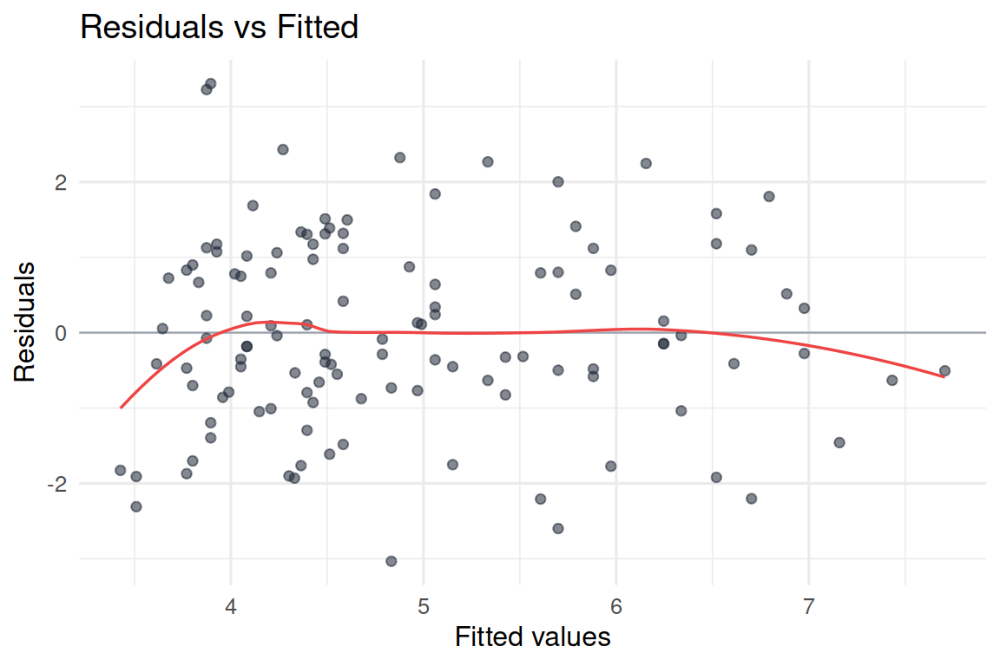
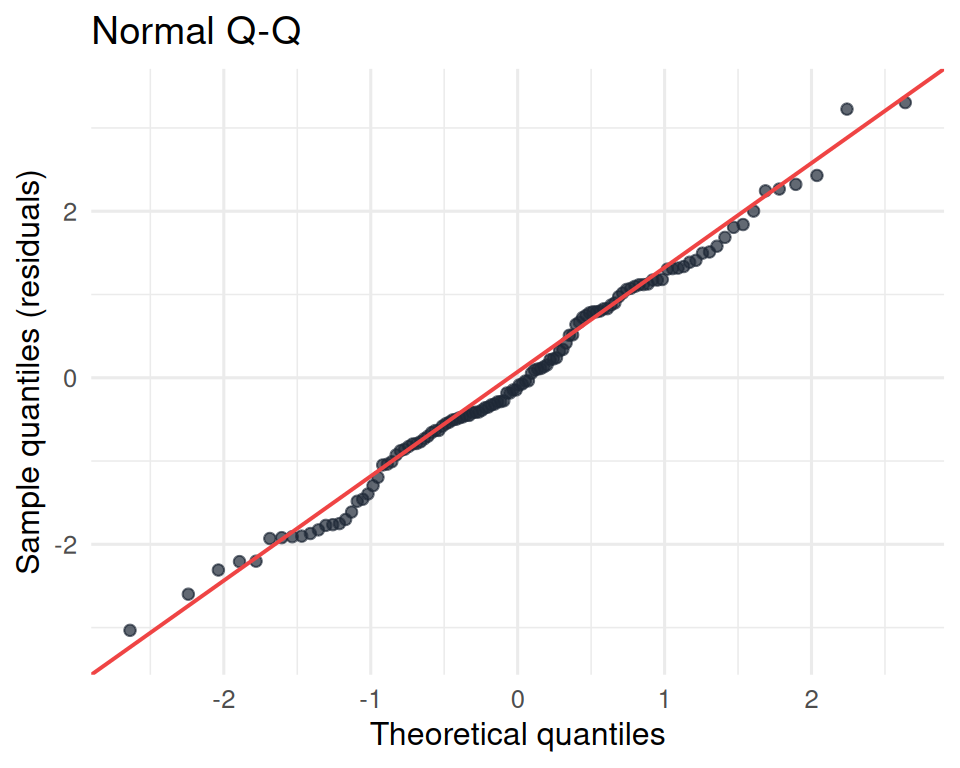
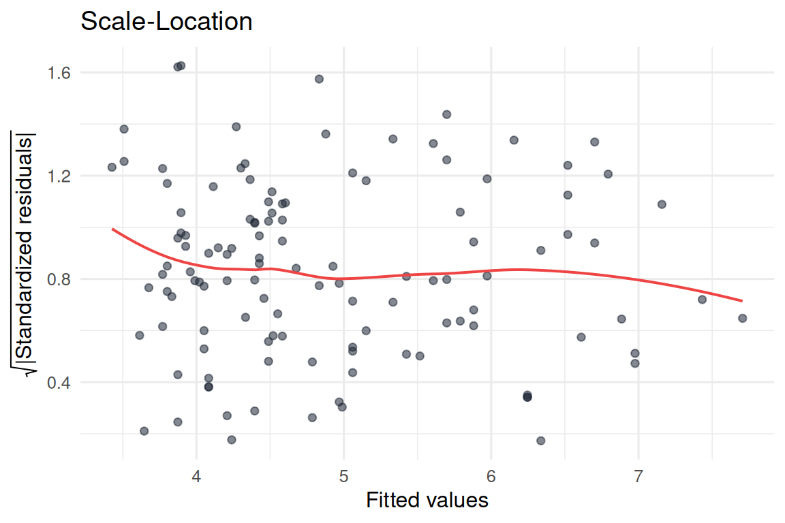
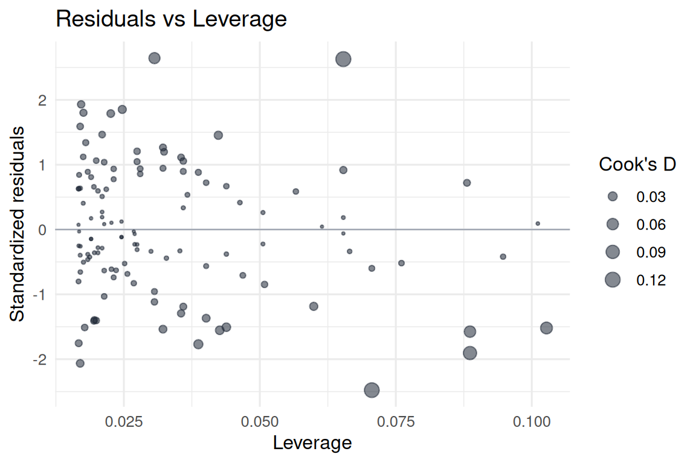

model <- lm(aggression ~ trait_hostility * condition, data = data)
par(mfrow = c(2, 2)) # 2x2 layout
plot(model)
par(mfrow = c(1, 1)) # reset20 Diagnostics, model fit, and the limits of your model
20.1 Overview
Chapter 19 introduced the bias-variance trade-off and the four LINE assumptions of OLS regression. This chapter takes the diagnostic side and makes it practical in R, then closes Section 3 by surveying when the linear model is not enough and where to go beyond it.
By the end of the chapter you will:
- produce the four standard diagnostic plots that R generates automatically with
plot(model), - read each plot and recognize the signature of each kind of assumption violation,
- compare models with
R-squaredandadjusted R-squared, and use the latter to penalize complexity, - recognize the main extensions of the linear model (nonlinear, multilevel, latent-variable, categorical-outcome, Bayesian, robust), and know which kind of problem each one solves.
This chapter is short on new prose and long on visuals. The point is to see what each diagnostic looks like and how to act on it.
20.2 Diagnostic plots in R
You fit a model with lm(), and then you check it. R provides four diagnostic plots automatically when you call plot() on a model object. In an interactive session, R will display them one at a time; in a script you usually want to see them together:
The four plots produced are:
- Residuals vs Fitted. Linearity and homoscedasticity.
- Normal Q-Q. Normality of residuals.
- Scale-Location. Another view of homoscedasticity.
- Residuals vs Leverage. Influential observations.
In what follows we walk through each one, with code you can run on your own.
20.2.1 Plot 1: Residuals vs Fitted
This plot displays the residual of each observation (vertical axis) against the model’s predicted value for that observation (horizontal axis). It is the workhorse of diagnostic plots, because two of the four LINE assumptions show up here:
- Linearity: the residuals should scatter randomly around zero, with no systematic curve. A U-shape or inverted-U indicates a nonlinear relationship the model is missing.
- Homoscedasticity: the spread of the residuals should be roughly constant across the range of fitted values. A fan or cone shape indicates heteroscedasticity.
On our vgames data, with an interaction model:

The red curve is a smooth trend through the residuals. A nearly flat red curve at zero, like above, is what you want. A clear curve in the red line would indicate a linearity problem.
20.2.2 Plot 2: Normal Q-Q
A Q-Q plot orders the residuals from smallest to largest and compares them to the quantiles they would have if they were perfectly normally distributed. The plot is essentially a scatter where each point is one residual: the horizontal coordinate is what the residual would be under perfect normality, and the vertical coordinate is what the residual actually is.
Points that fall along the diagonal mean the empirical and theoretical quantiles match, that is, the residuals are approximately normal. Points that curve away from the diagonal indicate deviation from normality, usually at the tails (heavy tails, light tails, or asymmetry).

The points sit close to the diagonal across the middle and most of the tails, with small deviations at the very extremes (typical and usually fine). Approximately normal.
20.2.3 Plot 3: Scale-Location
This is the residuals-vs-fitted plot transformed slightly: instead of raw residuals, the vertical axis shows the square root of the absolute standardized residuals. The transformation makes any change in the spread of the residuals easier to spot.
A horizontal smooth line with constant spread above and below it indicates homoscedasticity. An upward-sloping smooth line indicates heteroscedasticity (spread increases with fitted value); a downward slope means the opposite.

A near-flat red line is what we want. A clear upward or downward slope would indicate heteroscedasticity.
20.2.4 Plot 4: Residuals vs Leverage
The first three plots look at the residuals to diagnose general patterns. The fourth plot is different: it identifies particular observations that have an unusually large effect on the fit of the model, called influential observations.
Two ingredients are at work. Leverage measures how unusual an observation is in its predictor values: an observation far from the mean of the predictors has high leverage, because changing it would have a large impact on the slope. Residual measures whether the model fits that observation well. An observation with high leverage and a large residual is the dangerous combination; it can dominate the OLS estimate and pull the line away from where it would otherwise sit.
R draws Cook’s distance contours on this plot (the dashed lines). Points outside the 0.5 or 1 contour are usually worth examining.

In our data, no single observation has both high leverage and a very large residual. There is no point that dominates the fit. In a different dataset, an obvious outlier in the upper-right or lower-right corner of this plot would warrant a closer look.
20.3 What to do when an assumption is violated
A short, practical decision tree:
- Linearity violation. Try a polynomial term (e.g.,
I(x^2)), a log transformation of the predictor or outcome, or a generalized additive model (GAM) using themgcvpackage. - Homoscedasticity violation. Use robust (heteroscedasticity-consistent) standard errors via the
sandwichpackage, transform the outcome (oftenlog), or use generalized least squares. - Normality violation, small sample. Consider bootstrapping the standard errors, or transforming the outcome.
- Normality violation, large sample. Often tolerable for estimation. Be cautious with inference for extreme tails.
- Independence violation. Switch to a model that respects the clustering, typically a multilevel model (the
lme4package;lmer()is the most common function). - Influential observations. Examine the cases individually. If they reflect data-entry errors, correct them. If they reflect real but unusual participants, report results with and without the cases.
The general advice: assumption violations are reasons to think more carefully, not reasons to panic. A mild violation is a reason to acknowledge a limitation in your report. A serious violation is a reason to use a different model.
20.4 Comparing models: R-squared, adjusted R-squared, and beyond
Once you have several candidate models, how do you compare them?
The simplest comparison is by R-squared: the proportion of variance explained by each. As Chapter 19 noted, R-squared (almost) always goes up when you add predictors, even useless ones, which makes it a poor tool for comparing models with different numbers of predictors.
Adjusted R-squared penalizes each additional predictor. The formula is
\[ R^2_{\text{adj}} = 1 - (1 - R^2) \cdot \frac{n - 1}{n - p - 1}, \]
where \(n\) is the number of observations and \(p\) is the number of predictors. With more predictors, the denominator shrinks, the correction grows, and adjusted R-squared falls relative to R-squared. Only a predictor that improves the fit more than expected by chance will increase adjusted R-squared.
Looking at the models we have built on vgames_study.csv, side by side:
m1 <- lm(aggression ~ hours_weekly, data = data)
m2 <- lm(aggression ~ trait_hostility, data = data)
m3 <- lm(aggression ~ hours_weekly + trait_hostility, data = data)
m4 <- lm(aggression ~ trait_hostility * condition, data = data)
summary_table <- data.frame(
Model = c("hours_weekly",
"trait_hostility",
"hours_weekly + trait_hostility",
"trait_hostility * condition (interaction)"),
Predictors = c(1, 1, 2, 3), # main + interaction count
R_squared = c(summary(m1)$r.squared,
summary(m2)$r.squared,
summary(m3)$r.squared,
summary(m4)$r.squared),
Adj_R_squared = c(summary(m1)$adj.r.squared,
summary(m2)$adj.r.squared,
summary(m3)$adj.r.squared,
summary(m4)$adj.r.squared)
)
summary_table Model Predictors R_squared Adj_R_squared
1 hours_weekly 1 0.07158788 0.06371998
2 trait_hostility 1 0.11636615 0.10887772
3 hours_weekly + trait_hostility 2 0.19823192 0.18452648
4 trait_hostility * condition (interaction) 3 0.39264041 0.37693283The interaction model has the highest R-squared (about 0.39) and the highest adjusted R-squared. Adding condition and an interaction term improved the fit more than the penalty for the extra predictors took away. By this criterion, the interaction model is preferred.
Two more measures worth knowing about but not detailing here.
AIC (Akaike Information Criterion) and BIC (Bayesian Information Criterion) are alternative model-comparison numbers. Both balance fit against complexity, with stronger penalties than adjusted R-squared. Smaller is better for both. The functions AIC(model) and BIC(model) return them. They are particularly useful when comparing non-nested models or models with many predictors.
Cross-validation is the gold standard for prediction-oriented model comparison: fit each model on part of the data, evaluate it on the held-out part, and pick the model that generalizes best. The caret and tidymodels packages provide implementations.
20.5 When the linear model is not enough
Linear regression is powerful and applies to a remarkable range of psychology research questions. It is not universal. Here is a map of common problems that go beyond the standard linear model, with the type of model that addresses each.
Problem 1: Nonlinear relationships. The true relationship between predictor and outcome is curved, not straight. Tools: polynomial regression (add I(x^2) to the formula), log or square-root transformations, generalized additive models (GAMs) via the mgcv package, splines.
Problem 2: Nested or grouped data. Participants are clustered: students in classrooms, employees in companies, measurements within people over time. Tools: multilevel models / mixed-effects models / hierarchical linear models. The lme4 package (lmer()) is the standard.
Problem 3: Latent variables. You want to model constructs that are not directly observed (intelligence, motivation, anxiety) using several observed indicators. Tools: structural equation modeling (SEM), confirmatory factor analysis, exploratory factor analysis. The lavaan package in R.
Problem 4: Categorical outcomes. The outcome is a category (yes/no, survived/died, chose option A/B/C), not a number on a continuous scale. Tools: logistic regression for two categories, multinomial logistic regression for more. In R: glm(... , family = binomial) for logistic regression.
Problem 5: Small samples or unusual distributions. Very few observations, or seriously non-normal residuals, or unusual sampling structures. Tools: bootstrap methods, permutation tests, Bayesian estimation (the brms and rstanarm packages).
Problem 6: Outliers, leverage, robust estimation. A few extreme observations dominate the fit. Tools: robust regression (the MASS::rlm() function and the robustbase package), explicit outlier-handling strategies (Chapter 12).
For each of these, the modeling structure changes, but the underlying pillars are the same: you describe data with a model, you fit the model, you check the fit, and (in inference) you test hypotheses. The vocabulary you have built in Section 3 transfers, even when the specific machinery is new.
| Need | Standard tool | R package |
|---|---|---|
| Curved relationships | GAM | mgcv |
| Nested data | Multilevel models | lme4 |
| Latent variables | SEM | lavaan |
| Categorical outcomes | Logistic regression | stats::glm |
| Small samples or non-normal residuals | Bootstrap, Bayes | boot, brms |
| Outliers and influential points | Robust regression | MASS, robustbase |
Knowing these tools exist is the goal. You do not need to learn them now; when you encounter a research problem that one of them solves, you have a starting point.
20.6 Closing Section 3
We started Section 3 with the idea that a model is a useful simplification of data, that the mean is the simplest possible model, and that everything else (regression, multiple regression, interactions) builds on the same logic of predictions and residuals. We end with a small set of practical habits:
- Fit the model with
lm()and read the coefficients you care about (Chapters 16-18). - Check the assumptions with
plot(model)(this chapter), and either accept the mild violations or pick a different model for the serious ones (Chapter 19). - Compare models with adjusted R-squared, not raw R-squared, when they have different numbers of predictors (this chapter).
- Remember that everything in Section 3 is description, not inference. The slopes and R-squared values describe the dataset you have. The question of whether the patterns generalize to a population, and the standard errors and p-values that try to answer that question, are a topic for a later section of the book.
These habits are the entry to applied statistical modeling in psychology. The chapters that follow Section 3 take the same models and ask the inferential questions; later sections still take the same models and ask the causal questions. The modeling framework you have learned here is the engine that drives the rest.
20.7 Check your understanding
1. What does plot(model) produce when model is a fitted lm object?
2. The “Residuals vs Fitted” plot is mainly used to check which assumptions?
3. What does the Normal Q-Q plot check?
4. What is an “influential observation”?
5. Why is adjusted R-squared usually preferred over raw R-squared for comparing models?
6. You have 200 students nested within 10 classrooms. Independence is violated. What is the standard fix?
7. You want to model “intelligence” as a latent variable, measured by several test scores. Which family of models is most appropriate?
8. What is the most important caveat to remember as Section 3 closes?
20.8 References
Aiken, L. S., & West, S. G. (1991). Multiple regression: Testing and interpreting interactions. Sage.
Cohen, J., Cohen, P., West, S. G., & Aiken, L. S. (2003). Applied multiple regression/correlation analysis for the behavioral sciences (3rd ed.). Lawrence Erlbaum.
Navarro, D. J. (2018). Learning statistics with R: A tutorial for psychology students and other beginners (Version 0.6), Chapter 15.5. https://learningstatisticswithr.com